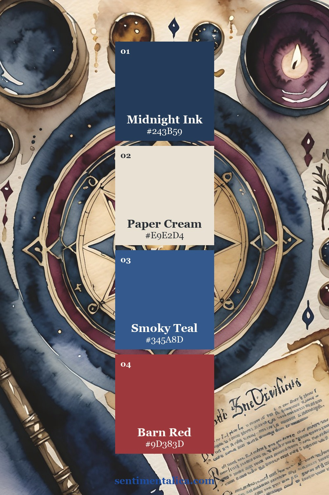
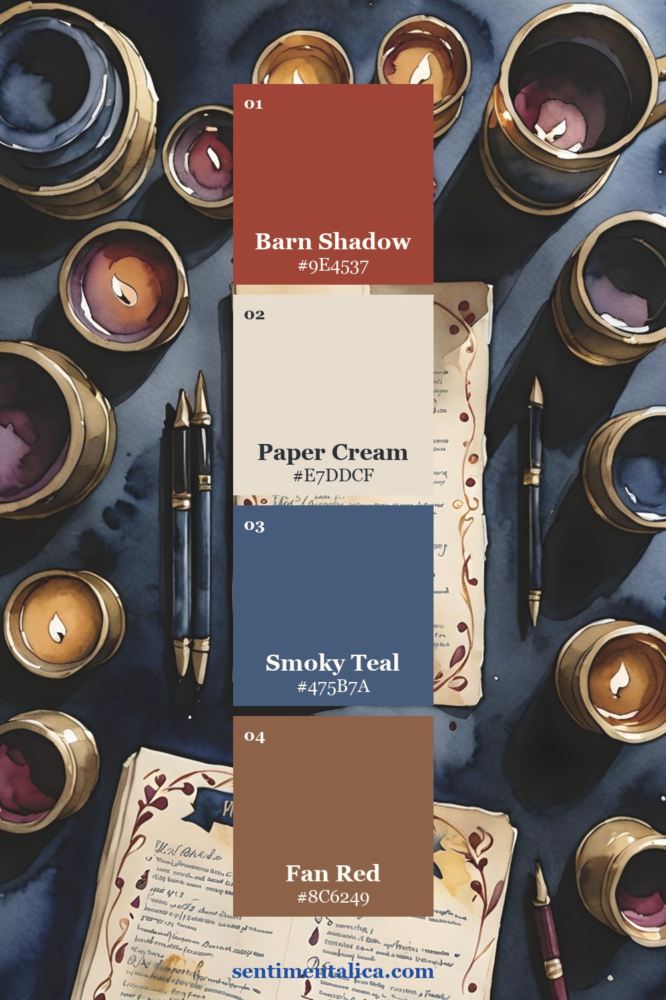
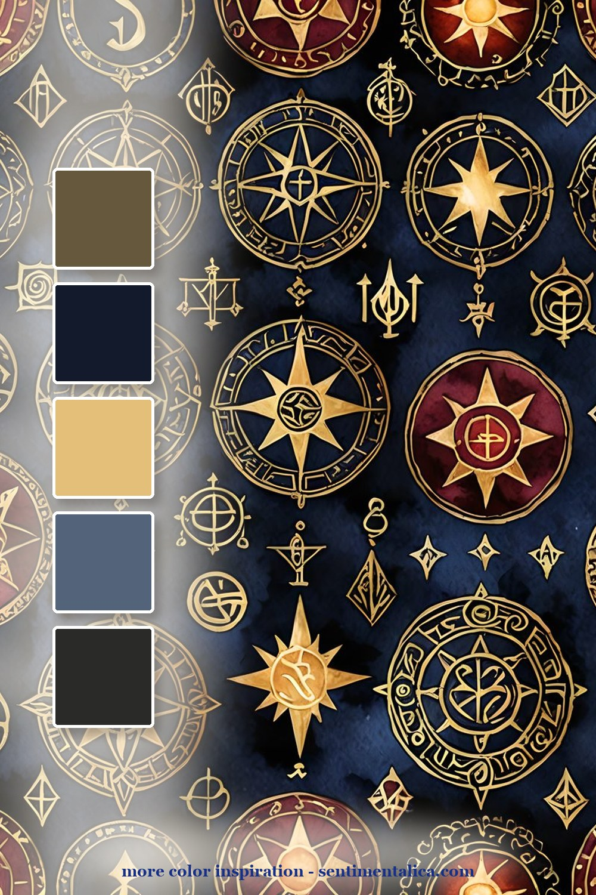
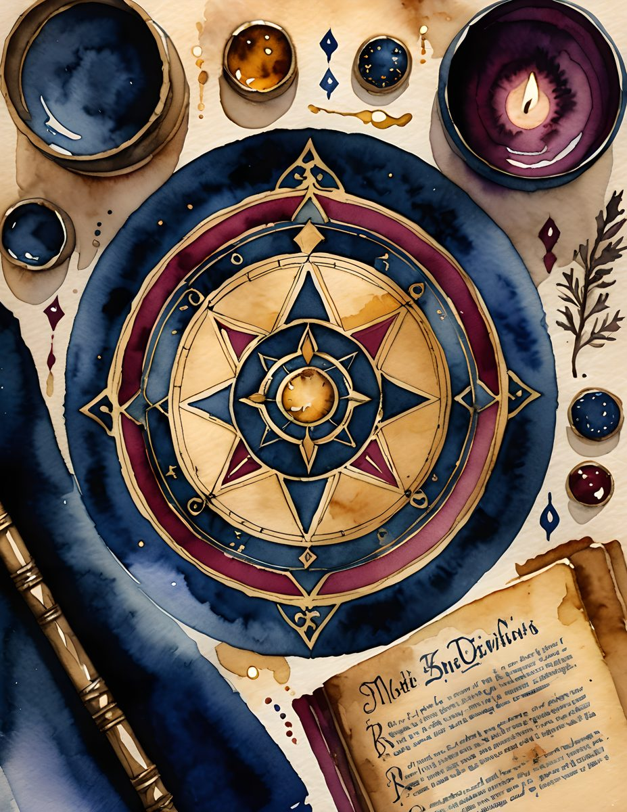
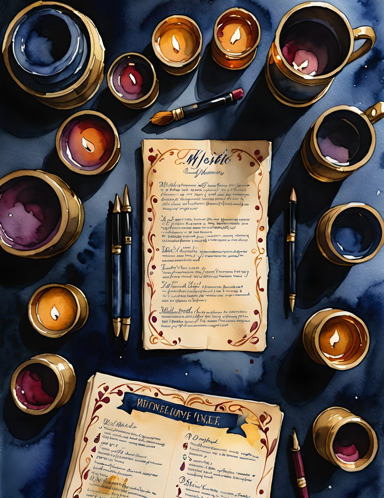

Dark academia works best when it is not just black and brown. The pages need candlelight, old paper, and a little celestial mystery, but they also need enough cream and blue to stay readable once you start layering labels and journaling spots.

The compass palette gives the whole spread a center. Use deep navy as the anchor, amber as the light, and antique cream as the breathing room. This is the palette for title pages, chapter dividers, or the first page of a reading journal.

The candle-and-notes page is warmer. It is good for pages about study rituals, late-night thoughts, or a book you want to remember. Keep the writing on cream scraps so the spread feels moody but still usable.

The celestial-symbol page is the pattern layer. Use it in smaller pieces: a torn edge, a pocket flap, a tag backing. Too much pattern can flatten the page; one dark patterned strip makes everything else feel intentional.
Make it feel lived-in
The beautiful part is the repetition. Pick five colors from one page, then repeat them in tiny places: a tab, a thread, a torn edge, a sticker, a date label. The page starts to feel designed because the colors keep answering each other.
Real pages to start from
For a ready dark-academia base, use the matching pages as the deep layer, then add one real-world scrap from your desk: a tea label, a book receipt, or the date written in pencil.


For more color inspiration, browse the full Sentimentalica journal archive and save the palette idea you want to try next.